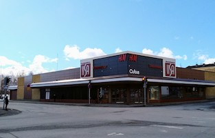

Shops
Sataako vettä tai syyhyttääkö shoppailusormia muuten vain? Ei hätää! Heti torin ympäristössä sinua palvelee kattavasti eri liikkeitä.
Palveleva pukimo sekä naisille että miehille. Valikoimasta löytyy laajasti laatumerkkejä niin arki- kuin juhlapukeutumiseen.
Louhenkatu 2,74100 Iisalmi Asukulma Oy
Kattava valikoima Marimekon ja Pentikin vaatteita ja tuotteita, sekä myös muilta laatumerkeiltä, kuten Nanso, LauRie ja Masai.
Kauppakatu 13,74100 Iisalmi Marituulet Oy